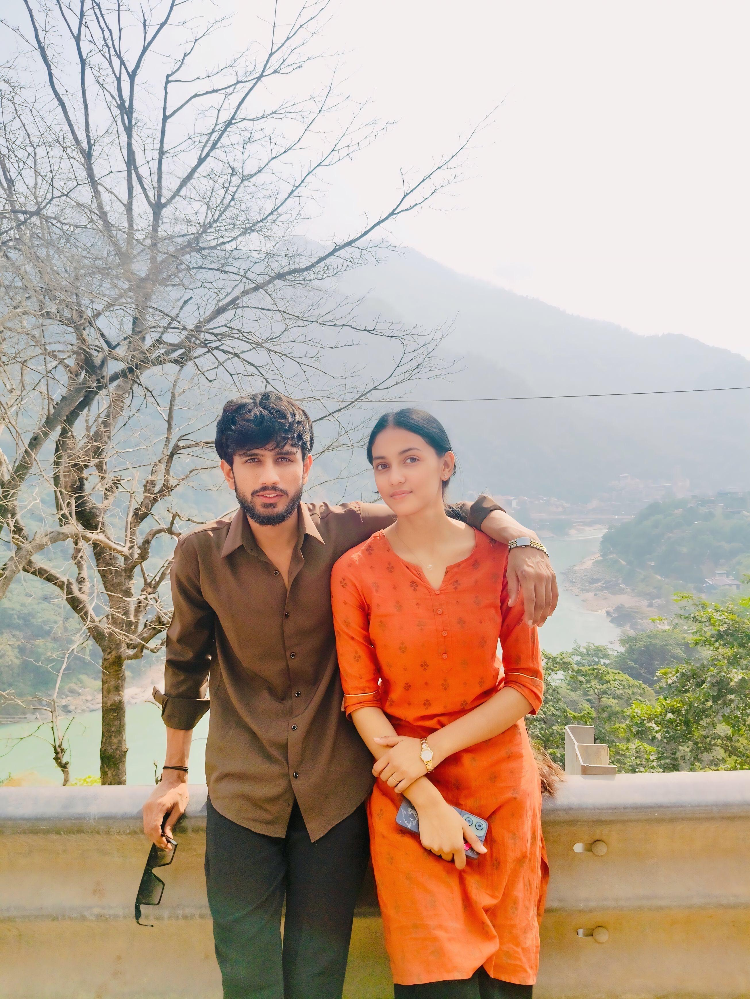
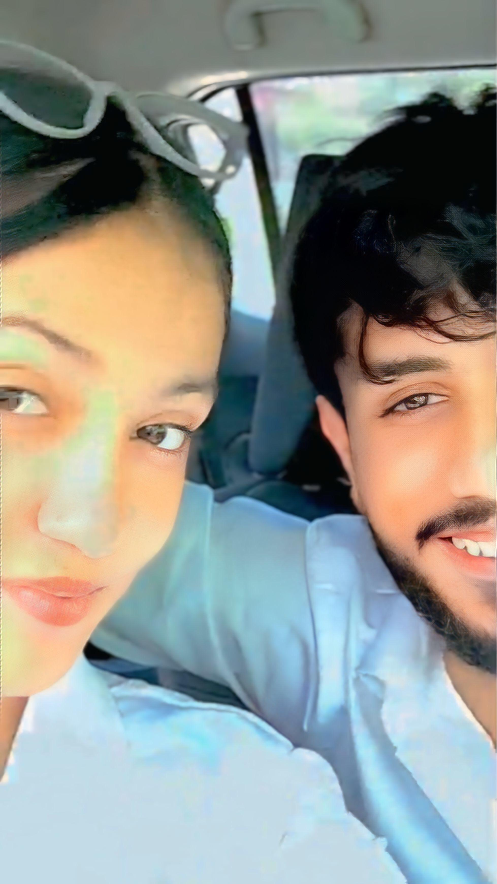
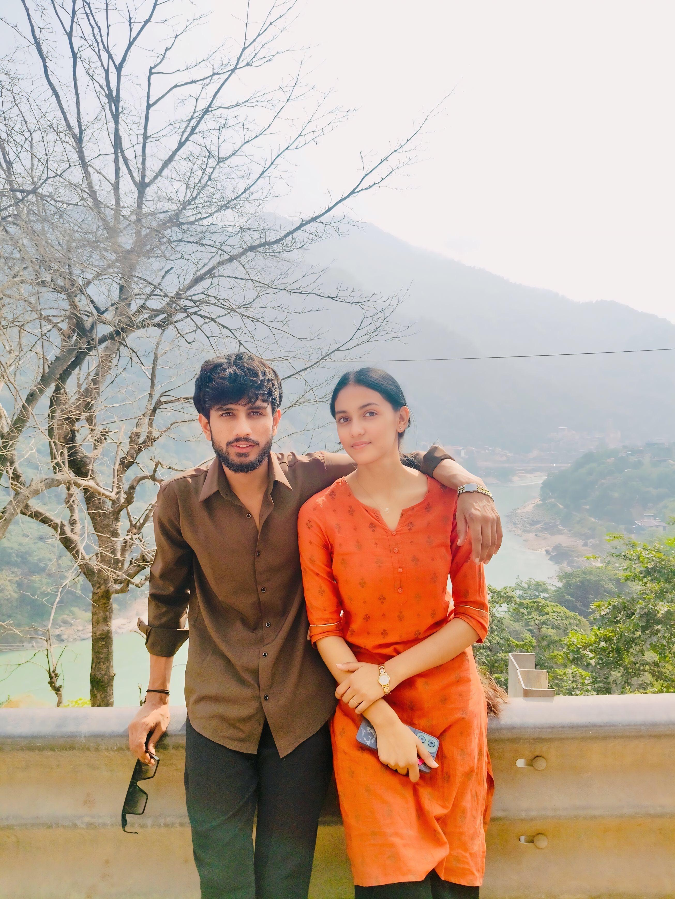
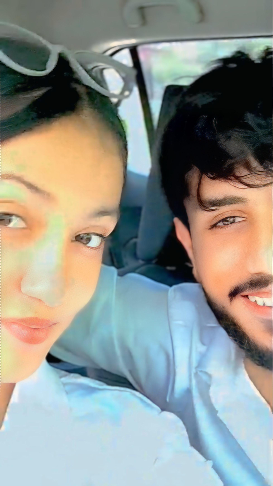
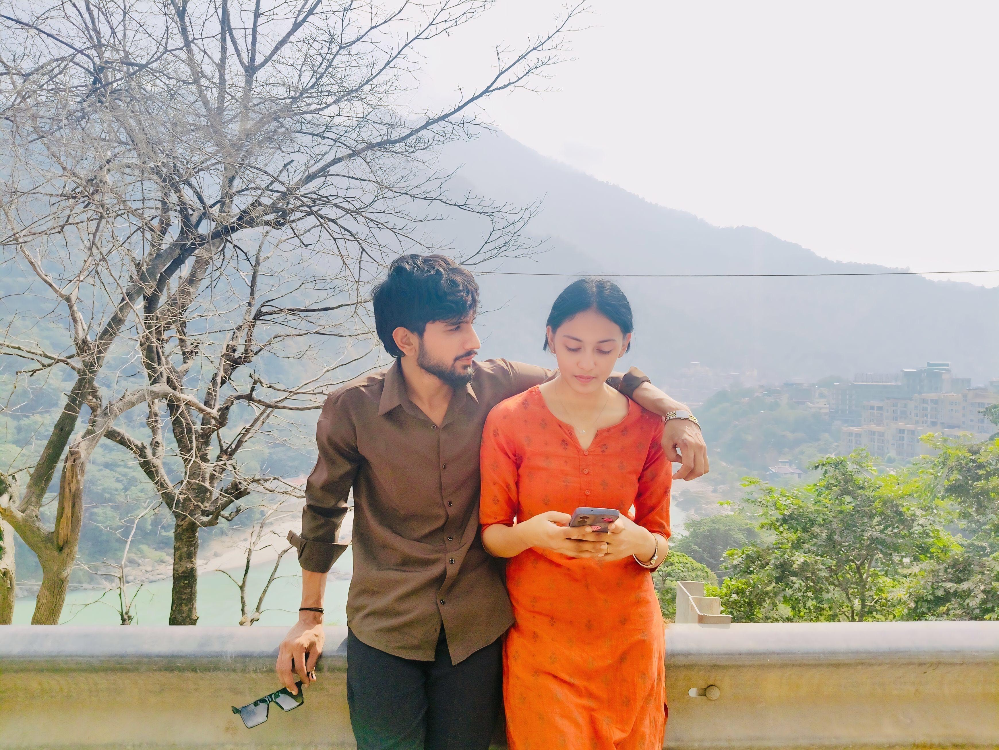
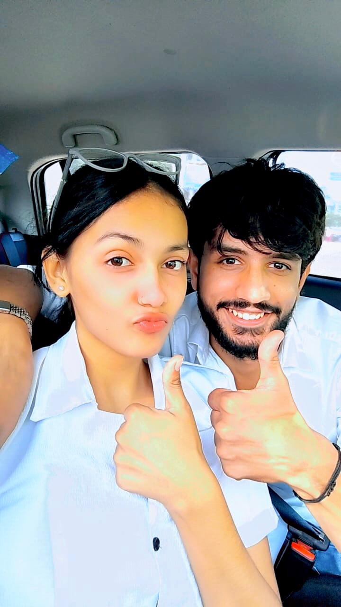
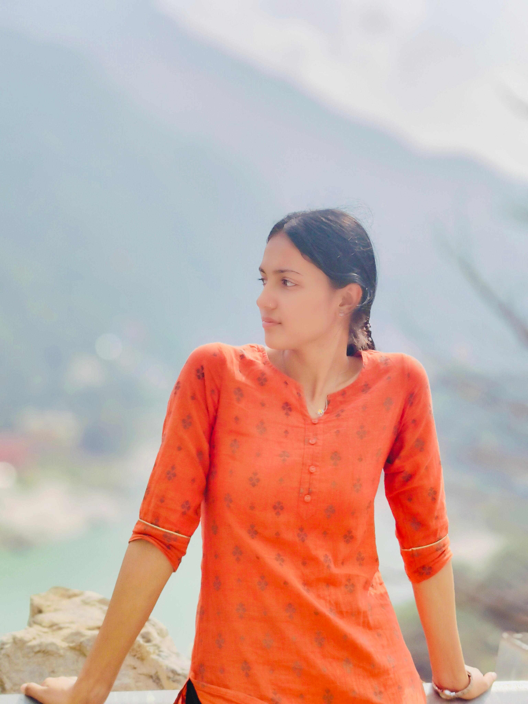
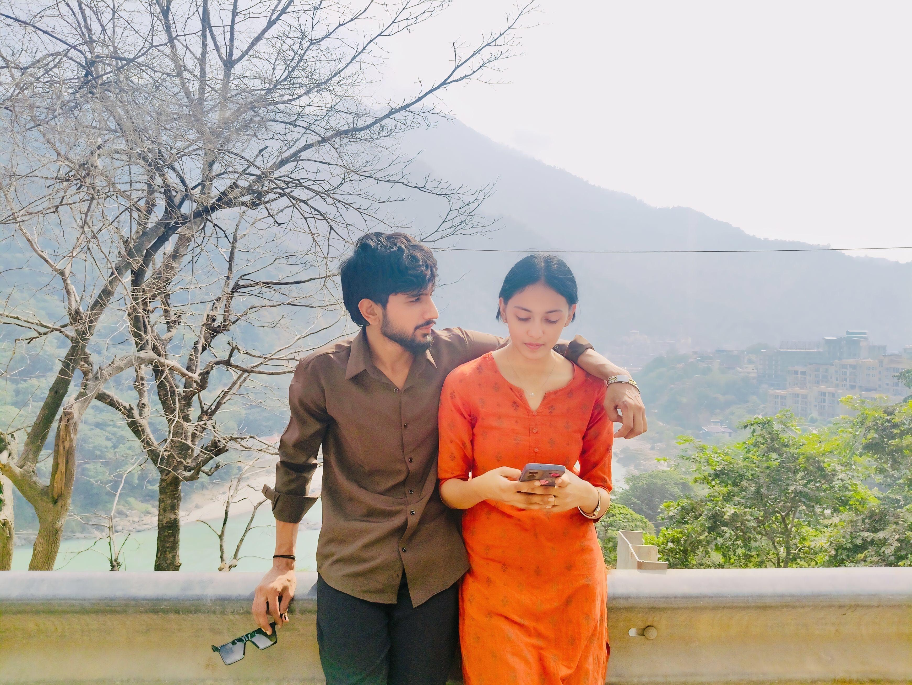
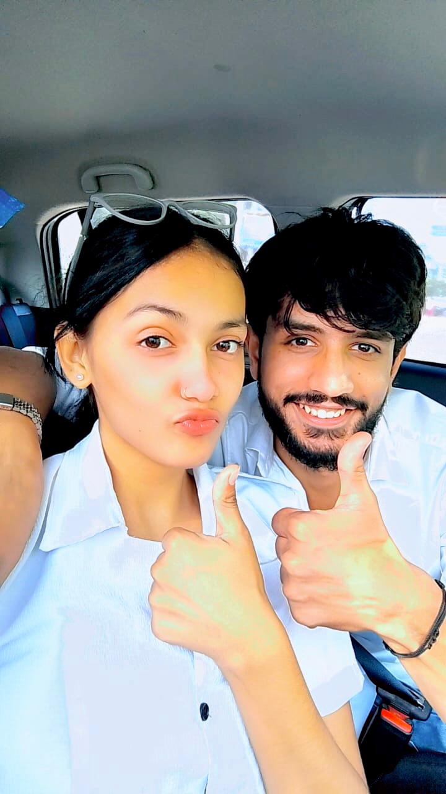
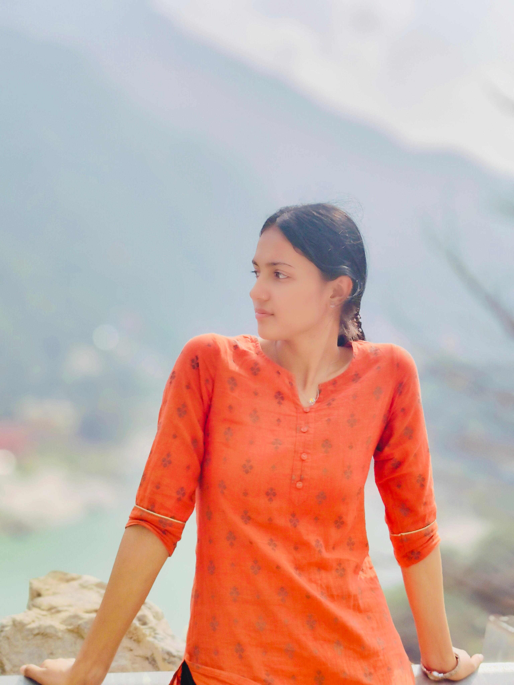

🌸 To My Amazing Chikku 🌸
Through thick and thin, you're my forever! 💕 
Through thick and thin, you're my forever! 💕
 



 





Chikku, you've made me the happiest. Click below for something extra special! To my Chiiku, my Moto M70, my Chudel, my Tamatar, my Aunty Ji ❤️ MY chotu sa bby tu jab bolta hai “thappad maarungi, chhati cheer dungi, kutte kamine” us waqt main darta nahi, bas muskura deta hoon… kyunki mujhe pata hai uske peeche ek innocent si pyaar bhari pagal ladki chhupi hai, jo sirf mujhe pyaar karti hai. Tera gussa bhi pyaara lagta hai, jaise momos or uski chatni.. Dono ka taste waste ek dusre ke bina... [ pr tu toh bina chatni bi kha leti h hattt... koi naa (pgl h vo baat alag h pr mera bby hai jo imp h)] Aur jab tu “vhi aakr marugi” kehti hai, main andar se bolta hoon “aaja aaaa jaaa na meri jaan, maar de mujhe apne pyaar se.” ❤️ hehehe Tera har mood mujhe yaad rehta hai — jab tu roothi hoti hai, toh lagta hai duniya ne color lose kar diya ho; aur jab tu hasta hai, toh lagta hai raakhshaho ka Yug dobara aagya bhyii me dar jata hu (hehehehehehehe). Main seriously bolra hoon tujhse — tere baaton se, teri nautanki se, tere pyaar se, aur us tareeke se jisme tu pyaar bhi karti hai aur guccha bi krti h. Tere “kyyyyyyyyaaaaaaaaaaaaaaaaaaaaaaaaaaaa haaaaaaaaaaaiiiiiiiii” bolne mein bhi itna pyaar lagta hai na, ki dil chaahe uss word ko frame kar ke diwaar pe chipka du. Tu mere liye sirf ek ladki nahi, ek habit ban gayi hai.( jhut salle, tu mere liye voo haii .. ummmmwaaah hai tu ummmmmwaaaaaaaahhhh mera samjra?? ummmmhh ummmmmmmmmmwaaaaaaaaahhh) Jab bhi tu “kutte aab tu gya” kehti hai ya mujhe daantti hai, mere andar kuch nikal jata hai.... afcoz pashina bhyii dar jata hu me bhot.. Aur sach bataun — agar kabhi tu mujhe maar bhi degi na, main fir bhi tujhe hug kar lunga, or boluga pyaar se apke kaan me — "aaaareeeeeee kab tak jawani chipaogi rani... kuwaro ko kitna sataogi rani , kabhi toh hamari chudelia banogi?? !" 😘 Tu meri sabse special cheez hai — meri morning thought, meri night prayer, aur meri har heartbeat ke beech mein bas tu hi tu hai. heartbeat ki sound lub-dub hoti h pr meri? lub nidhi dumb nidhi.. lub nidhi dub nidhi lub nidhi dub nidhi... hai Chahe duniya kuch bhi keh le, mera dil toh bas yehi kehta hai — “Ummwahh forever, meri Chiiku, meri Moto M70, meri Chudel, meri Tamatar, meri Aunty Ji.” ❤️🔥 Ab tu bol — thappad maarne aayegi ya pyaar dene? 😉 hope so likha hua apko feel hua meri madam bss assi he life hone wali h hamari khati meethi sii — ye sirf letter nahi, ek hug in words hai ❤️ chahe tu gussa kare ya pighle, dono meri duniya hai 💫 chahe “vhi aakr marugi” ya “ummwahh” donon mere liye ek hi matlab rakhte hain — lub dub you, kutta-style love. bye its 1.20am gn — Tera Mohit, forever addicted to you 💋 😍